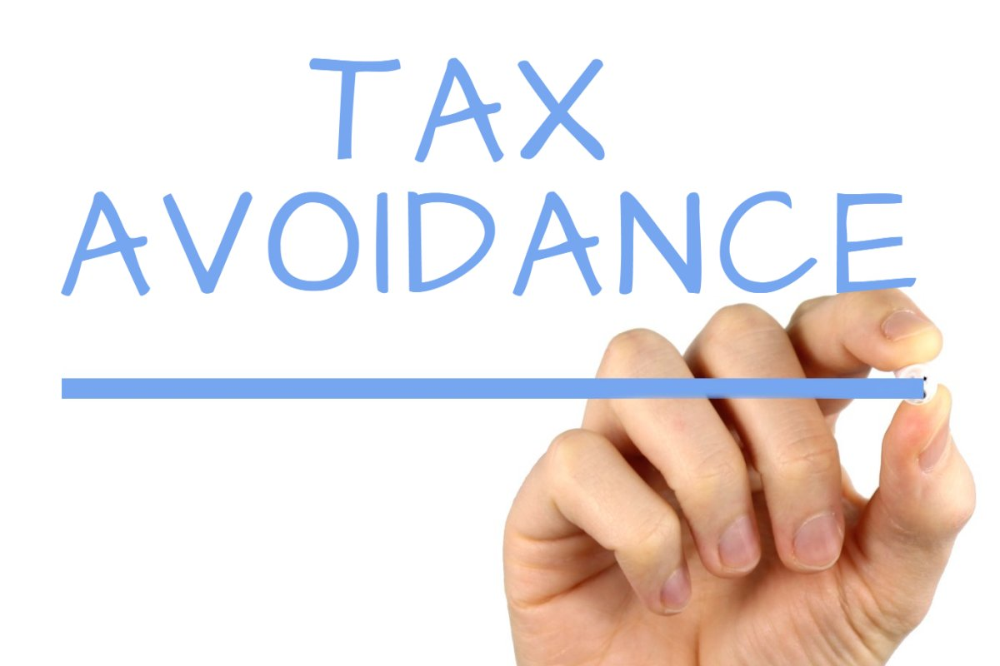

Creating an economy that works for all
Matthew Brompton

The economy is BIG. In fact according to fullfact.org, it is £1,865 billion big, making it the 5th and 9th biggest in the world (you did read that right, see fullfact.org for more). It affects all of us every day from our rents and mortgages to our bananas. For that reason, Labour has made it the biggest section in the manifesto. So big in-fact that I have had to split this post into sections in order to cover it properly.

In this section we will be looking at Labour's claims of A fair taxation system, in particular their commitment to tax avoidance. With so much to do we'd better jump straight in.
A fair taxation system || Tax Avoidance
One of the main points that sticks out of this manifesto is Labours promise to tackle tax avoidance through tax transparency and an enforcement programme. Great news for us, not so good for Jimmy Carr.
Tax avoidance should not be confused with tax evasion. Tax evasion is the efforts of an individual or corporation to not pay tax through non-compliance. This includes things like paying cash in hand, whereas avoidance is the act of using the legal loopholes in order to pay less tax on profits and earnings.
Tax Avoidance has made massive news in recent years making average Joe furious and rightfully so. The HMRC's best guess is that avoidance costs the government £2.7 billion a year (2015 estimate). You may have heard much larger figures from sites like BuzzFeed who suggest that the sheer scale of avoidance is so huge and with some ministers involved themselves, this estimate is huge undervaluation. One of the highest estimates I have seen is £69.9 billion. The larger estimates often also include evasion and the black market which, Labour have not mentioned meaning a fair guess would be around £10-£15 billion.
"We need to have global information and global action to go after tax cheats,"
-Australian Treasurer Joe Hockey
Australian Treasurer Joe Hockey stated "We need to have global information and global action to go after tax cheats," which seems to be the consensus and many deals are being done right now in the EU and worldwide to catch companies like Starbucks, Boots, Apple, Microsoft, PayPal, eBay, Intel, Yahoo!, Facebook, Uber, Netflix, Hewlett-Packard, IBM and Twitter. Meaning Labour's promise doesn't seem so far-fetched. Africa has a fantastic scheme, The Tax Inspectors Without Borders (TIWB) project which collected £204m in 2016, much of this coming from Zimbabwe, a relatively small economy.
So how much of this is it safe to estimate we will see in the future? In reality, knowing just how much tax is avoided is impossible So Labour may find it difficult to clampdown on this issue alone but a willingness to try is truly refreshing. Assuming costs of a billion or two (just small change to the avoiders) and remembering not all the missing tax is traceable, a good ballpark figure would be £6.5 billion.
